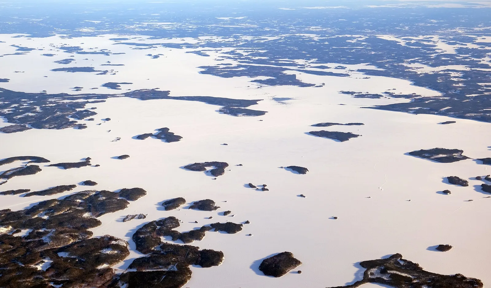
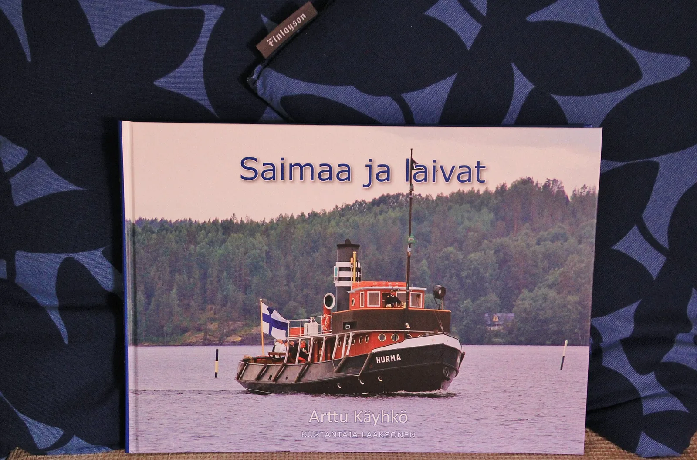

OV3 · Otros vuelos
OV3 · Andere Flüge
OV3 · Other flights
Lago Saimaa
Información
En el Saimaa vive una foca que no existe en ningún otro lugar del mundo. La foca anillada de Saimaa quedó aislada ahí cuando el lago se separó del mar, y hoy es el único sitio del planeta donde se la encuentra.
Es una especie ártica: necesita nieve y hielo para criar. En invierno excava madrigueras en los ventisqueros que se acumulan en las orillas de las islas, y ahí pare y descansa. Está en peligro de extinción: la estimación de Metsähallitus para 2025 es de 530 ejemplares.
La vigilan y la protegen el organismo de parques de Finlandia y más de trescientos voluntarios locales por año, que cuentan madrigueras y palean nieve a mano para armarles ventisqueros artificiales cuando el invierno no alcanza. En 2025 nacieron 114 crías; hace diez años eran unas ochenta.
Information
En el Saimaa vive una foca que no existe en ningún otro lugar del mundo. La foca anillada de Saimaa quedó aislada ahí cuando el lago se separó del mar, y hoy es el único sitio del planeta donde se la encuentra.
Es una especie ártica: necesita nieve y hielo para criar. En invierno excava madrigueras en los ventisqueros que se acumulan en las orillas de las islas, y ahí pare y descansa. Está en peligro de extinción: la estimación de Metsähallitus para 2025 es de 530 ejemplares.
La vigilan y la protegen el organismo de parques de Finlandia y más de trescientos voluntarios locales por año, que cuentan madrigueras y palean nieve a mano para armarles ventisqueros artificiales cuando el invierno no alcanza. En 2025 nacieron 114 crías; hace diez años eran unas ochenta.
Information
En el Saimaa vive una foca que no existe en ningún otro lugar del mundo. La foca anillada de Saimaa quedó aislada ahí cuando el lago se separó del mar, y hoy es el único sitio del planeta donde se la encuentra.
Es una especie ártica: necesita nieve y hielo para criar. En invierno excava madrigueras en los ventisqueros que se acumulan en las orillas de las islas, y ahí pare y descansa. Está en peligro de extinción: la estimación de Metsähallitus para 2025 es de 530 ejemplares.
La vigilan y la protegen el organismo de parques de Finlandia y más de trescientos voluntarios locales por año, que cuentan madrigueras y palean nieve a mano para armarles ventisqueros artificiales cuando el invierno no alcanza. En 2025 nacieron 114 crías; hace diez años eran unas ochenta.
La foca anillada de Saimaa necesita nieve y hielo para criar: excava sus madrigueras en los ventisqueros de las orillas. Los inviernos suaves son por eso una amenaza directa, junto con las redes de enmalle en las que las crías quedan atrapadas.
La población crece, pero despacio y de forma despareja: avanza en Puruvesi y en el sur del Saimaa, mientras que la situación en el norte del lago es preocupante. Cada invierno, más de trescientos voluntarios palean nieve a mano para armar ventisqueros artificiales cuando el frío no alcanza.
La foca anillada de Saimaa necesita nieve y hielo para criar: excava sus madrigueras en los ventisqueros de las orillas. Los inviernos suaves son por eso una amenaza directa, junto con las redes de enmalle en las que las crías quedan atrapadas.
La población crece, pero despacio y de forma despareja: avanza en Puruvesi y en el sur del Saimaa, mientras que la situación en el norte del lago es preocupante. Cada invierno, más de trescientos voluntarios palean nieve a mano para armar ventisqueros artificiales cuando el frío no alcanza.
La foca anillada de Saimaa necesita nieve y hielo para criar: excava sus madrigueras en los ventisqueros de las orillas. Los inviernos suaves son por eso una amenaza directa, junto con las redes de enmalle en las que las crías quedan atrapadas.
La población crece, pero despacio y de forma despareja: avanza en Puruvesi y en el sur del Saimaa, mientras que la situación en el norte del lago es preocupante. Cada invierno, más de trescientos voluntarios palean nieve a mano para armar ventisqueros artificiales cuando el frío no alcanza.
Fuentes
Quellen
Sources
- Metsähallitus, Parks & Wildlife Finland, Saimaa ringed seal population continues to grow: mild winters and gill nets remain a threat — https://www.metsa.fi/en/press-releases/saimaa-ringed-seal-population-continues-to-grow-mild-winters-and-gill-nets-remain-a-threat/
Galería
Galerie
Gallery


Fuentes
Quellen
Sources
- Metsähallitus, Parks & Wildlife Finland, Saimaa Ringed Seal — https://www.metsa.fi/en/protection-and-management/species/saimaa-ringed-seal/ consultado 2026-10-06abgerufen 2026-10-06accessed 2026-10-06
- Metsähallitus, Parks & Wildlife Finland, Saimaa ringed seal population continues to grow — https://www.metsa.fi/en/press-releases/saimaa-ringed-seal-population-continues-to-grow-mild-winters-and-gill-nets-remain-a-threat/ consultado 2026-10-06abgerufen 2026-10-06accessed 2026-10-06